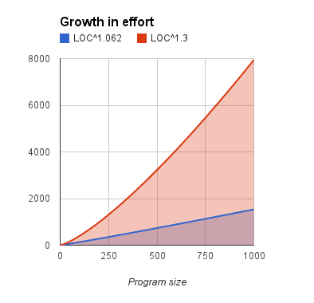

Software Engineering, cs510, Spring 2015
Department of Computer Science, College of Engineering
This page has two aims:
- Try to define SE in terms of what is constant in the field (i.e. what was true 20 years ago and might be true in 20 years time);
- Try to stress what is different about this view of SE than views held elsewhere.
As to the second point, in the following SE is not
- Some mathematical exercise where perfect axioms are translated to perfect code;
- Some linear pipeline where the original ideas turn (eventually) into the final product.
Rather, my view SE is how smart apes organize their world via extensive experimentation and elaboration of executable forms of their ideas.
Other people's perspectives:
- The standard Joke
- The v-diagram
- The highest-level pictire of SE:
- Software = 1/3 planning, 1/6th coding, 1/4 unit test, 1/4 system test
- An Important Document February 11-13, 2001
- A rebellion against paper-heavy development approaches
- A brief history from "waterfall" to "agile" to "devops" and beyond.
- The 2004 SE Book of Knowledge
- Note their main headings: requirements, design, construction, testing, maintenance, configuration management, se management, se process, se models and methods, quality. professional practice, economics, foundations (computing, mathematical, engineering)
- For a "cheat's guide" to SE buzzwords, see the "Breakdown of Topics" figures on page 1.2, 2.2, 3.2, etc
- Graphics of Best Practices, from Edward Yourdon;
- Great graphic on SE history
- Collection of good links
- Some recent predictions on Information Technology.
Software Engineering is the
- process of the
- design,
- construction and
- maintenance of
- good enough
- software,
- given the available resources.
The last point means that we are always trading off between what we want with what we need with what we've got. Software engineers, therefore are the people we look to:
- Make and
- justify
- well-informed decisions
- about trade-offs
- in software engineering.
This, in turn means that at any time, software engineering are aware of multiple possibilities and the reasons why we should be doing one, and not the others. To enable this, students of SE can:
- Strategy 0: STUDY! Build up their background knowledge about SE;
- Strategy 1: READ! Using the literature, extend that knowledge by reading widely and making some adjudication about all that material.
- Strategy 2: MINE!: Using data science, collect and analyze project data;
- Strategy 3: BUILD!: Using software construction tools, consider multiple designs (perhaps via some prototyping.
Note that we have one project track for each of the above strategies 1,2,3
It seems so unlikely that software ever works.
I'm not saying that software never crashes, cause it surely does:
And some of those crashes can be spectacular and disasterous
- A bug in the code controlling the Therac-25 radiation therapy machine was directly responsible for at least five patient deaths in the 1980s when it administered excessive quantities of X-rays.
- The Vancouver Stock Exchange index had large errors due to repeated rounding. In January 1982 the index was initialized at 1000 and subsequently updated and truncated to three decimal places on each trade. This was done about 3000 times a day. The accumulated truncations led to an erroneous loss of around 25 points per month. Over the weekend of November 25–28, 1983, the error was corrected, raising the value of the index from its Friday closing figure of 524.811 to 1098.892.
- And Boom!
By why doesn't it crash more often? How does it even work in the first place?
- Consider software with 300 booleans.
- Internal state space = 2300 which is a number larger than 1023, which is the number of stars in the known universe.
- Think about that: that software is more complex than all the stars in the sky.
So the wonder is not that software fails (which it does, sometimes at the worse possible time) but that it ever works at all.
Some more maths:
- A software system with N modules has N2 possible intraconnections... each of must be designed and built and tested and maintained.
- So theoretically, software effort increases dramatically as software size increases.
But it does not:
- Barry Boehm, data from 161 Southern Californian companies, 1990 to 2000.
- Effort = a*LinesOfCodeb
- b= 0.91 + 0.01*sum(5 factors)
- Factors include risk manangement, team cohesion, etc. Range in value from 3.04 (median) to 7.8 (max)
- So sum(5 factors) is usually 5*3,04=15.2 and at most 5 * 7.8 = 39
- And b = 1.062 (usually) and, worse case, b=1.3.
- Which means that, usually, effort grows very slowly on LOC.

Q: Why is it so easy to build larger and larger software systems?
Yeah, not so much...
- Voltaire: It is a necessary consequence of our humanity. We are all fallible, and prone to error; let us then pardon each other's follies. This is the first principle of natural right.
- Will Rogers: It isn't what we don't know that gives us trouble, it's what we know that ain't so.
- Wikipedia, long, long list of cognitive biases. e.g. inattentional blindness from Simons and Chabris
Class exercise: what are the factors that make SE so successful?

{kind=link}
{kind=link}
{kind=link}
{kind=link}